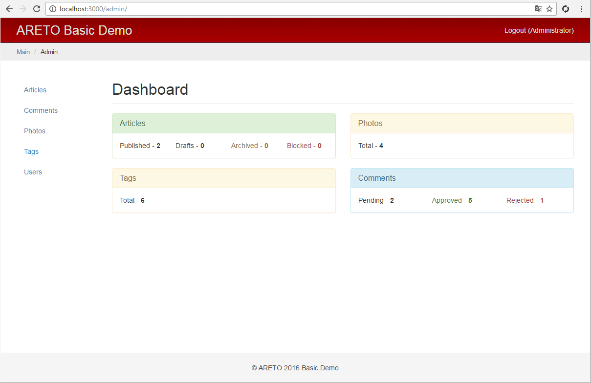

Модуль администрирования
Модульная структура фреймворка Areto позволяет легко разрабатывать и управлять различными частями сайта.

Создайте в корне приложения директорию module/admin.
Внутри модуля структура файлов может соответствовать структуре файлов приложения.
Фактически модуль заключает в себе мини-приложение. Он может иметь собственную конфигурацию,
наследовать или создавать компоненты, содержать дочерние модули.
В конфигурацию приложения добавьте секцию modules,
в которую включите модуль администрирования. Теперь все действия администрирования
будут доступны по маршруту /admin/{controller}/{action}.
config/default.js